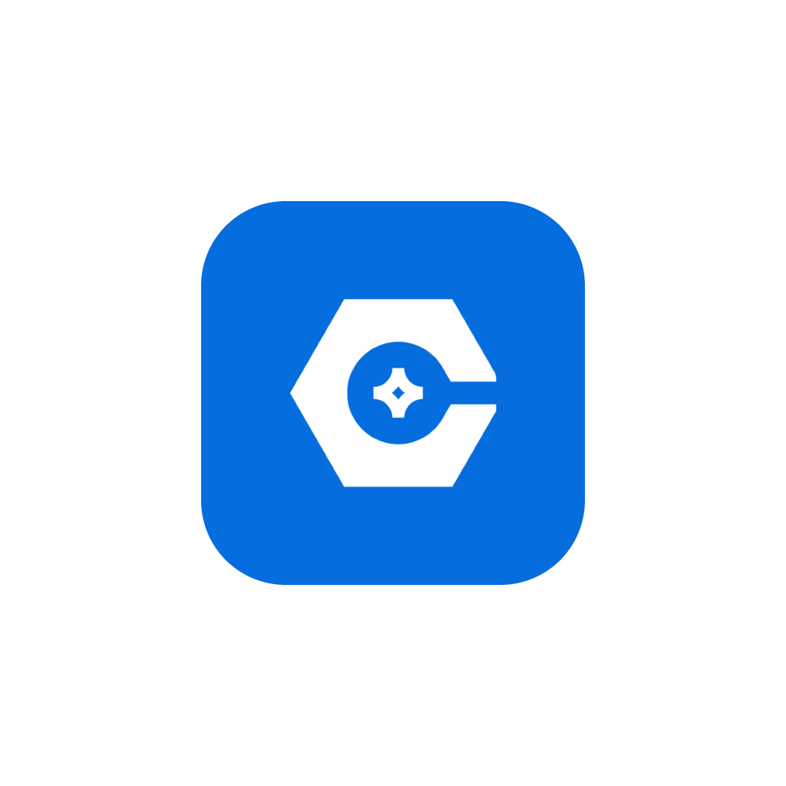

Skovvej 12, 4622 Havdrup +45 60 72 71 08 Emil@Rasmussen-Solutions.dk

Værktøjsstyring med RFID, egen læser-hardware og besked, når noget mangler.
Værktøj forsvinder fra varevogne, containere og lagre, og det opdages først, når nogen står og mangler det. Trackrs sætter et RFID-tag på værktøjet og en læser i bilen eller containeren. Så ved systemet hele tiden, hvad der er hvor, og siger til, når noget mangler.
Læseren melder løbende, hvilke tags den kan se, og appen viser det live.
Lås en lokation, og få besked, når noget forlader den.
Til udstyr, der ikke kan bære et RFID-tag.
Hvem har hvad, og hvornår kommer det tilbage.
Eftersyn planlægges og dokumenteres på det enkelte stykke værktøj.
Tags og labels printes direkte fra systemet på en Godex-labelprinter.
Blandt andet til forsikring og aktivitetslog.
REST, webhooks og en MCP-server, så AI-assistenter kan slå værktøj op.
Trackrs er ikke kun en app. Vi har selv bygget læseren, firmwaren, serveren og appen.
Et ESP32-S3-board med LTE-M og et UHF-RFID-modul, egen firmware og et kabinet tegnet i CAD.
Læseren sender over MQTT, læsningerne gemmes som tidsserier, og ændringer skubbes live ud til app og web.
Samme Expo-kodebase kører på iPhone, Android og i browseren.
REST-API, webhooks og en MCP-server gør Trackrs til noget, andre systemer kan bygge videre på.
Vi bygger apps og platforme, hvor data, hardware og mennesker skal hænge sammen. Ring eller skriv, så tager vi en snak om jeres opgave.
Besøg trackrs.dk →